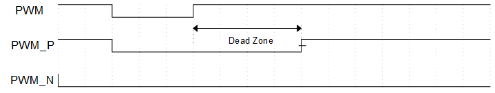

TIMER
示例列表
本章介绍 TIM 示例的详细信息。RTL87x2G 为 TIM 外设提供以下示例。
功能概述
RTL87x2G 嵌入了八个定时器模块，这些模块由软件控制、可编程，并可用于各种任务。 每个定时器通道完全独立，不共享任何资源，因此它们可以同步运行。
特性列表
通道数量：8。
独立输入时钟分频器 1/2, 1/4, 1/8, 1/16, 1/32, 1/40, 1/64。
定时器时钟源：32 KHz, 40 MHz, PLL 。
2 种模式（Free-run/用户自定义）。
支持 PWM 输出功能。
32-bits 递减计数器。
超时中断。
互补 PWM 输出和死区（仅 TIM2/TIM3）。
系统框图
TIM 的系统框图如下图所示。 通过调用 MCU Firmware 固件实现 TIM 的定时功能或 PWM 输出功能，硬件将根据固件配置启用定时功能或输出 PWM 波形。

TIM 系统框图
定时器功能
TIM 可以在两种模式下运行：Free-run 模式和 User-define 模式。通过初始化结构体中 TIM_TimeBaseInitTypeDef::TIM_Mode 进行设置，可以选择 TIM_Mode_FreeRun 或 TIM_Mode_UserDefine 。
在两种模式下，TIM 均为递减计数。
Free-run 模式：TIM 从 0xFFFFFFFF 开始递减计数。
User-define 模式：TIM 从用户自定义的计数器值开始递减计数。通过初始化结构体中
TIM_TimeBaseInitTypeDef::TIM_Period进行设置。
当计数到达 0 时，会触发 TIM 的超时中断，同时计数器将重新加载初始值，并继续倒计数。 当 TIM 关闭后，将停止计数，重新开启 TIM 后，计数器将重新加载初始值并开始计数。
PWM 模式
每个 TIM 均支持 PWM 输出功能，其中 TIM2 和 TIM3 支持 PWM 互补输出和死区功能。
在初始化中结构体配置 TIM_TimeBaseInitTypeDef::TIM_PWM_En 来开启 PWM 输出功能。
当 TIM 关闭时，且处于 PWM 模式时，PWM 将输出低电平。
当 TIM 开启时，定时器会加载设定的计数器值，来输出相应时间的高电平和低电平。
其中，高电平的计数器值通过参数 TIM_TimeBaseInitTypeDef::TIM_PWM_High_Count 配置，低电平计数器值通过参数 TIM_TimeBaseInitTypeDef::TIM_PWM_Low_Count 配置。

PWM 波形示意图
备注
PWM 的占空比不能设置为 0 或 100%。
互补输出与死区功能
仅 TIM2 和 TIM3 支持 PWM 互补输出与死区功能。
在初始化中结构体配置 TIM_TimeBaseInitTypeDef::PWMDeadZone_En 为 ENABLE 以开启该功能。
开启该功能后，PWM 输出将会分成两路，分别为 PWM_P 和 PWM_N。
死区时间的计算公式为 deadzone time = dead zone size * dead zone clock period。
死区的时钟源为 32kHz，即 dead zone clock period 为 (1/32kHz) = 33us。
dead zone size 通过 TIM_TimeBaseInitTypeDef::PWM_Deazone_Size 进行设置。
死区时间的设定分为如下四种情况：
当死区时间大于 0 且小于 PWM 高电平/低电平的持续时间时，PWM_P 和 PWM_N 的上升沿输出会延迟一个死区时间。

PWM 死区示意图（死区时间大于 0 且小于 PWM 高电平/低电平持续时间）
当死区时间大于 PWM 高电平持续时间时，PWM_P 会持续输出低电平。

PWM 死区示意图（死区时间大于 PWM 高电平持续时间）
当死区时间大于 PWM 低电平持续时间时，PWM_N 会持续输出低电平。

PWM 死区示意图（死区时间大于 PWM 低电平持续时间）
当开启 PWM Bypass 功能后，PWM_P 的上升沿输出会延迟一个死区时间，且 PWM_P 和 PWM_N 的输出会完全互补。调用函数
TIM_PWMDZBypassCmd()以开启 PWM Bypass 功能。

PWM 死区 Bypass 示意图